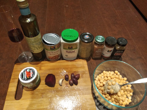

Israeli Hummus

Ingredients:
- 2 cups cooked garbanzo beans, 1⁄2 cup tahini, 1 tbsp olive oil, lemon, tsp cumin, 4 cloves of garlic, half onion, tsp salt, tsp paprika, zaatar, cilantro
How to make it:
- Simmer beans with baking soda for 45 minutes (if you have cans, skip this)
- Blend in a blender: garlic, lemon juice, and salt
- Add tahini and blend it. add a few tbsp of water if it’s too thick
- Add garbanzo beans, cumin, paprika and olive oil. Add water and salt if needed.
- Serve with all the spices and silantro
Note: you can sauté the onion and garlic if you want
Variations
If you want Sexy Hummus (pink), add steamed beets. I will score you between 1-5 (1 less accurate, 5 most accurate) by how close you are to Hello Kitty pink (hair bow).